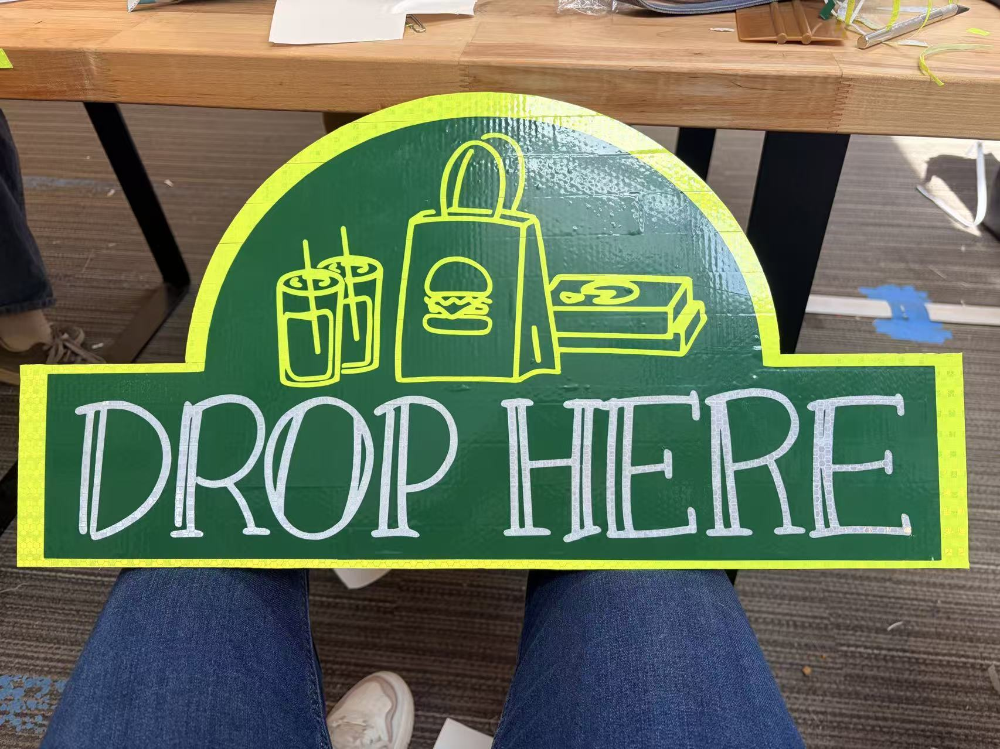

The motto “Design to Repair the World” stayed with me throughout this project because it changed the way I think about everyday problems. Before this, I never realized that something as routine as food delivery could become a barrier for someone else. But looking at the Brandeis campus more carefully, I began to see how the built environment often leaves certain students behind. A delivery bag left on the ground may seem harmless, but for someone with a visual impairment or someone who struggles to bend down, it can create frustration, danger, or dependence on others. I didn’t want to just build a piece of furniture—I wanted to create something that could ease even a small part of that experience. By designing a simple, standardized place for deliveries, my hope was to give students a greater sense of independence, dignity, and care in a system that too often overlooks their everyday needs.
We didn’t want to simply assume our design worked—we wanted to understand whether it truly made the experience easier and more accessible. To do that, we focused on two ways of measuring success. First, we tested visibility by checking whether a low-vision user could locate the hub at 8:30 PM, when lighting conditions were more difficult. Second, we measured tactile efficiency by timing how long it took blindfolded users to find the sign by touch and understand the “Drop Here” instructions. Our goal was not just better performance on paper, but a design that people could recognize quickly, navigate confidently, and use independently, with a target recognition time of under ten seconds.
The Result: Our final validation at 8:30 PM showed an average visibility of 20.6 feet and a tactile recognition time of 7.2 seconds with a 100% identification rate.
At the beginning of this project, I thought the most important challenges would be the CAD layout or getting the laser settings exactly right. But after going through four rounds of prototyping, I realized the biggest difference came from something much simpler: the material itself. Our early wooden prototypes almost disappeared at night, and the stickers we tested didn’t provide the clear tactile feedback needed for touch-based navigation. Everything changed when we switched to laser-etched acrylic with high-contrast vinyl. Suddenly, the sign became much easier to see and understand, even from farther away. That experience taught me an important lesson about engineering: a design can look perfect on a screen, but if the material doesn’t work for the people using it in the real world, then the design has failed its purpose.

Working on this project taught me that design is never really finished. No matter how much we perfected this version, there was always more to improve, whether it was making it more weather proof, making the instructions feel more intuitive, or simply making the experience better for the people using it. Even after the success of Cycle 4, I kept thinking about what could still be better because design is a constant cycle of learning, adjusting, and fixing. Moving beyond the prototype stage, seeing these hubs implemented on campus like Usdan becoming a real and permanent part of campus life would be fulfilling.